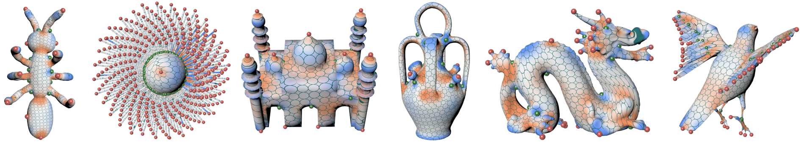
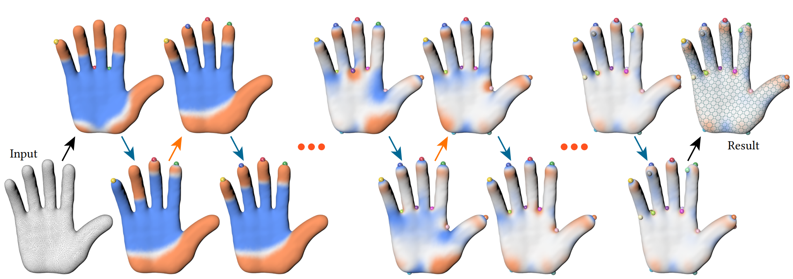
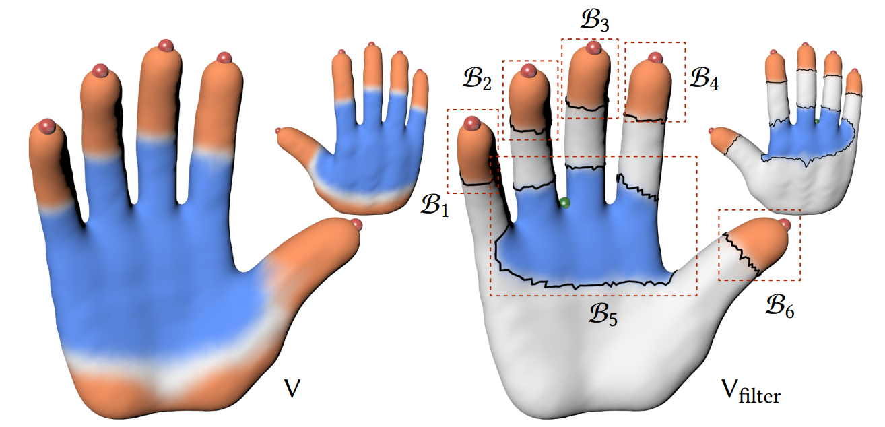

Figure 1: We propose an efficient method to construct sparse cone singularities under distortion-bounded constraints for conformal parameterizations.
Abstract
We propose an efficient method to construct sparse cone singularities under distortion-bounded constraints for conformal parameterizations. Central to our algorithm is using the technique of shape derivatives to move cones for distortion reduction without changing the number of cones. In particular, the supernodal sparse Cholesky update significantly accelerates this movement process. To satisfy the distortion-bounded constraint, we alternately move cones and add cones. The capability and feasibility of our approach are demonstrated over a data set containing 3885 models. Compared with the state-of-the-art method, we achieve an average acceleration of 15 times and slightly fewer cones for the same amount of distortion
Conformal parameterizations, cone singularities, moving cones, adding cones, distortion-bounded constraints
Constructing cone configurations, i.e., determining the numbers, placements, and angles of cones, is a fundamental task. Theoretically, the more cones are placed, the distortion is lower. Therefore, we focus on achieving a favorable tradeoff between the parameterization distortion and the number of cones. Moreover, we pay special attention to improving efficiency without affecting the quality as low efficiency often decrease the actual experiences. Undoubtedly, it is challenging to effectively and efficiently construct high-quality cone configurations due to combinatorial characteristics.
In this paper, we propose an effective and efficient method to construct sparse cone singularities with bounded distortion constraints for conformal parameterizations. We combine the greedy and the optimization-based methods by making full use of their advantages.
We reduce distortion by iteratively running an optimization-based phase to move cones on the surface and a greedy stage to add cones until the distortion-bounded constraint is satisfied.

Figure 2: Our framework. Given an input mesh, three cones are initialized at vertices with high absolute values of Gaussian curvatures. From up to down (blue arrows): the process of moving cones. From down to up (orange arrows): the process of adding cones. The algorithm terminates when the area distortion is smaller than the input distortion bound 0.1, and the result is on the far right.
To efficiently move cones, we alternately optimize the cone angles and the cone locations. The cone angles are achieved by minimizing the area distortion and the cone locations are obtained by evaluating the negative gradient directions. To compute the directional derivatives, we represent the Dirac delta measure from a limit view. Then, the technique of shape derivatives can be directly used for evaluation. Besides, the supernodal sparse Cholesky update is adopted to significantly accelerate the moving process.

Figure 3: An example of the moving cones process. 20 color-coded cones are randomly placed as the initialization on the far left. The text below each model indicates the iteration number and the area distortion. The curve on the far right plots the change of area distortion. The area distortion decreases monotonically, and the moving process converges by 50 iterations.
To promote the satisfaction of the distortion-bounded constraint, a distortion-guided, region-oriented cone singularity addition strategy is developed to add an appropriate number of cone singularities.

Figure 4: An example of the process for adding cones. Left: the cones and the log conformal factors of all vertices V before the adding cones process. Right: the log conformal factors of Vfilter. We show the vertices V \ Vfilter in white. Six connected branches B1, ..., B6 with black boundaries are computed. The new cone is located at B5 with the highest region area distortion.
Code
We would like to thank the anonymous reviewers for their constructive suggestions and comments. This work is partially supported by the National Key R&D Program of China (2022YFB3303400), the National Natural Science Foundation of China (62272429, 62025207), the Major Project of Science and Technology of Anhui Province (202203a05020050) and the Xiaomi Young Talents Program. Xiao-Ming Fu is a USTC Tang Scholar.
@article {li2023efficientcone,
title = {Efficient Cone Singularity Construction for Conformal Parameterizations},
author = {Li, Mo and Fang, Qing and Zhang, Zheng and Liu, Ligang and Fu, Xiao-Ming}
journal = {ACM Transactions on Graphics},
volume={42},
number={6},
pages={1--13},
year = {2023}
}